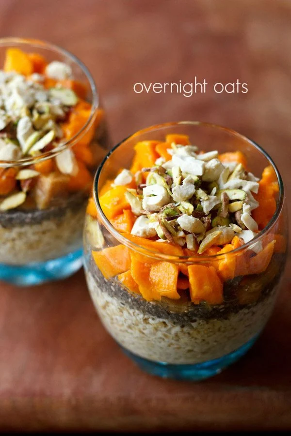

Breakfast

Discription
This overnight oats recipe is quick, simple, and delicious dish made by soaking quick-cooking oats or rolled oats with milk, water, or yogurt overnight in the fridge. Then later topped with fruits or nuts and served for breakfast as a healthy dish for busy mornings. This dish is like having a dessert for breakfast.
Ingridients
Steps
- Take quick cooking oats or rolled oats in a small jar, glass, mug or a bowl.
- Add raw sugar or jaggery or any sweetener of your choice like maple syrup or honey.
- Add water. If using rolled oats, add ½ to ⅔ cup of water. Instead of water you can opt to add almond milk, lite coconut milk or yogurt.
- Stir and mix well.